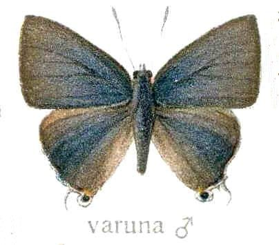

इंडिगो फ्लैशIndigo Flash
Rapala varuna · Lycaenidae · INS-0259

- Scientific name वैज्ञानिक नाम
- Rapala varuna (Horsfield, 1829)
- Family कुल
- Lycaenidae
- Hindi हिंदी
- इंडिगो फ्लैश
- Local names स्थानीय नाम
- indigo flash, jamuni flash titli, dark indigo flash
- Status here यहाँ की स्थिति
- native
- Movement आवागमन
- Resident, here all year
- Known from कहाँ दर्ज
- Others have published records from the wider Awadh–Purvanchal plain, none yet from Basti–Ayodhya अवध–पूर्वांचल से दूसरों के प्रकाशित अभिलेख, बस्ती–अयोध्या से अभी नहीं
- IUCN IUCN
- not evaluated
- Review समीक्षा
- not yet reviewed
When to look कब देखें
Expected mainly in March, April, May, June, July, August, September, October, November. मुख्यतः मार्च, अप्रैल, मई, जून, जुलाई, अगस्त, सितंबर, अक्टूबर, नवंबर में अपेक्षित।
Uses and possibilities उपयोग और संभावनाएँ
Drawn from the documented uses in the profile below, where each is labelled traditional, current or a research lead. All uses →
Tell it apart from इनसे अलग पहचानें
इंडिगो फ्लैश / Indigo Flash
Rapala varuna (Horsfield, 1829) — Lycaenidae
इंडिगो फ्लैश — अवध के कांटेदार जंगलों, झाड़ियों और बेर के बागों में पाई जाने वाली फुर्तीली थेक्लीन तितली, जिसके नर के पंखों पर जामुनी-नीली रेशमी चमक और नीचे एकसमान भूरे रंग पर सफेद किनारी वाली रेखा होती है।
Quick Identification त्वरित पहचान
| Feature | Description |
|---|---|
| Wingspan | Small to medium among Indian theclines |
| Male upperside | Deep indigo-blue to blackish purple with silky gloss |
| Female upperside | Uniform dark greyish brown without blue gloss |
| Underside colour | Smooth earthy grey-brown to slate |
| Postdiscal line | Narrow dark brown line edged externally with white |
| Tornus & tail | Distinct lobe with orange-red spot and thread tail |
| Antennae | Slender, ringed with white, clubs black with orange tip |
| Resting posture | Wings tightly closed upright, camouflaged as dry twig or foliage |
Field tip: Look along flowering ber hedges and scrub clearings. A small, swiftly flying lycaenid that flashes violet-indigo in flight and settles abruptly to reveal a smooth brown underside crossed by a single neat white-edged line is this species.
हिंदी — कैसे पहचानें: नर के पंख ऊपर से गहरे जामुनी-नीले और चमकदार होते हैं, जबकि मादा सादी भूरी होती है। पंखों की निचली सतह एकसमान मटमैली भूरी होती है जिस पर सफेद किनारी वाली एक महीन भूरी रेखा और पिछले पंख पर पतली पूंछ होती है।
Morphology आकारिकी
The male upperside is characterized by an intense, dark indigo-blue gloss that covers most of the fore and hind wings, appearing almost jet-black in oblique light and flashing violet-indigo when catching the sun directly. In females, this structural coloration is entirely absent, replaced by a uniform dark fuscous brown.
On the underside, the ground colour is remarkably uniform, devoid of complex spots or mottling. A clean, narrow dark brown transverse band, bordered on its outer margin by a sharp white line, crosses both wings. At the tornus of the hindwing, a distinct lobe bears a velvety black spot capped by a bright orange-red lunule, adjacent to a delicate thread-like black tail with a white tip.
The uniform underside pattern provides exceptional camouflage against dry twigs and dead foliage. The rapid flight and instantaneous settling behaviour make the butterfly challenging to track visually once it enters thick undergrowth. Structural characteristics include hairy eyes, porrect palpi, and gently clubbed antennae.
हिंदी: नर तितली के पंख ऊपर से धूप में गहरे नीले-बैंगनी चमकते हैं, पर मादा बिल्कुल भूरी होती है। पंखों के नीचे कोई जटिल धब्बे नहीं होते, बस एक साफ सफेद किनारे वाली भूरी लकीर और पूंछ के पास नारंगी-काला निशान होता है।
Behaviour & Ecology व्यवहार और पारिस्थितिकी
Rapala varuna is named for the rapid, flickering flash of indigo blue exhibited as the male darts between sunlit perches in canopy clearings and hedgerows. Adults are swift and agile fliers that frequently settle on outer foliage, perching with tightly closed wings at an angle to the sun.
Males actively defend sunny perching territories on shrubs and low trees, chasing away rival butterflies and returning quickly to the same leaf. They frequently visit flowering bushes in late morning.
They descend to wet sand along streams and canals during the hottest afternoon hours to suck moisture and dissolved mineral salts. When perched, they occasionally perform hindwing rubbings to create motion at the false-head tornus.
Adults show strong fidelity to particular perching bushes, returning repeatedly to favourite sunny leaves over several consecutive days during fine weather.
हिंदी: नर तितली धूप वाले पत्तों पर बैठकर अपने इलाके की रखवाली करती है और पास आने वाली दूसरी तितलियों को खदेड़ देती है। यह बहुत फुर्ती से उड़ती है और अक्सर दोपहर में नहरों के किनारे गीली मिट्टी से पानी और लवण चूसती है।
Life Cycle / Phenology जीवन चक्र
Eggs are laid singly on the unopened flower buds and tender young leaves of host plants. The larva is stout, onisciform, and yellowish green or pinkish brown, camouflaged against flower clusters.
The caterpillar bores into flower buds and developing fruits, consuming the reproductive organs. Caterpillars are facultatively attended by small ants that feed on exudates from dorsal glands.
Pupation takes place in a compact, rounded brown chrysalis fastened by a silk girdle to a dead twig, dried leaf, or bark crevice. Development is rapid during summer and monsoon, with pupae overwintering during cold winter months.
The complete life cycle from egg deposition to adult emergence can be completed in approximately three to five weeks during warm monsoon weather.
हिंदी: मादा तितली फूल की कलियों पर अकेले अंडे देती है। इसकी सुंडी कलियों और छोटे फलों के भीतर घुसकर उन्हें खाती है और चींटियां इसके मीठे रस के बदले इसकी रक्षा करती हैं। प्यूपा टहनी या सूखे पत्ते से चिपका रहता है।
Host Plants or Prey आहार
The larvae feed on woody plants of several families. Wynter-Blyth (1957) gives Leguminosae, Combretaceae and Sapindaceae; Chou (1994) names Ziziphus xylopyrus, Z. rugosa, Quisqualis indica (now Combretum indicum) and Sapindus laurifolius (both as listed by Funet). Whether the Ber and Reetha of Awadh are used is not recorded in these sources.
Vane-Wright & de Jong (2003) add Acacia, Dendrolobium, Psidium, Litchi, Nephelium and Celtis among others, from across the species' range (as listed by Funet).
Adults feed on flower nectar of Lantana camara, Acacia, and various roadside weeds, playing a modest role in pollination of scrubland flora.
हिंदी: इसकी इल्लियां जंगली बेर की प्रजातियों, रीठा की एक प्रजाति और मधुमालती जैसी कई झाड़ियों और पेड़ों पर पलती दर्ज हैं। अवध के बेर और रीठा पर यह पलती है या नहीं, यह अभी देखना बाकी है। वयस्क तितलियां जंगली फूलों का रस पीती हैं।
Predators / Natural Enemies शत्रु
Larvae within flower clusters are attacked by parasitoid wasps belonging to the family Braconidae. Spiders, including jumping spiders (Salticidae) and lynx spiders (Oxyopidae), actively hunt resting adults on foliage.
Adults flying across scrub clearings are captured by insectivorous birds, while crab spiders (Thomisidae) and praying mantises ambush butterflies visiting flowers.
Robber flies (Asilidae) occasionally intercept adults as they fly swiftly across open sunny gaps in thorny scrub.
हिंदी: कलियों के भीतर रहने वाली इल्लियों पर परजीवी ततैये अंडे दे देते हैं। उड़ती तितलियों को कीटभक्षी चिड़ियां और झाड़ियों में घात लगाए बैठी मकड़ियां व सूंड़े अपना शिकार बनाते हैं।
Agricultural / Human Relevance कृषि प्रासंगिकता
The Indigo Flash is not recorded as a pest. Its recorded food plants include wild Ziziphus; whether it feeds on cultivated Ber in Awadh is not recorded.
It contributes to local pollination and food web diversity across rural agricultural landscapes.
The species helps sustain populations of insectivorous birds and small predators throughout agricultural scrub ecosystems.
हिंदी: इस तितली से किसी फसल को नुकसान दर्ज नहीं है। अवध में यह खेती की बेर पर पलती है या नहीं, यह अभी देखना बाकी है। यह परागण में मदद करती है।
Expected Locally स्थानीय रूप से अपेक्षित
Not a field record. Written from published accounts for eastern Uttar Pradesh. No confirmed local sighting yet — if you have seen it, that is what the atlas needs.
अभी तक स्थानीय पुष्टि नहीं। यह विवरण प्रकाशित स्रोतों से है, किसी अवलोकन से नहीं।
GBIF holds published records from the wider Awadh–Purvanchal plain, none yet from Basti–Ayodhya. In eastern Uttar Pradesh, Rapala varuna is expected in scrub woodlands, ravine borders, canal banks, and orchards where wild and cultivated Ziziphus bushes flourish. A confirmed first record requires a clear photograph with place and date submitted through the project portal.
हिंदी: अवध के कांटेदार जंगलों, बागों और नहर की पटरियों पर जहां बेर की झाड़ियां हैं, वहां यह तितली मिलने की पूरी संभावना है। स्थानीय पुष्टि के लिए इसकी तस्वीर आवश्यक है।
Distribution वितरण
Global range: Widely distributed across India, Sri Lanka, Nepal, Myanmar, and extending across Sundaland to the Philippines and northern Australia.
In India: Common in open and dry scrub country throughout peninsular and northern India (Varshney & Smetacek 2015).
In Uttar Pradesh: Recorded across deciduous scrub, ravines, and canal-side plantations of the Gangetic plain.
In Basti district / eastern UP: Expected in scrub woodland borders, village orchards, and riverine thickets.
हिंदी: यह प्रजाति भारत, श्रीलंका और दक्षिण-पूर्व एशिया में पाई जाती है। उत्तर प्रदेश के मैदानी इलाकों और कांटेदार झाड़ियों वाले जंगलों में इसका फैलाव है।
Research Questions शोध प्रश्न
- Does Rapala varuna show a strong dietary preference for Ziziphus over Sapindus in the rural scrub of Awadh?
- What are the primary parasitoid species affecting Rapala varuna pupae in northern India?
- How does winter temperature influence the diapause duration of the pupal stage in Uttar Pradesh?
- What is the dispersal distance of adults between isolated patches of thorny scrub?
- क्या अवध में बेर के पेड़ों पर फूल आने के समय इस तितली की संख्या बढ़ती है?
- क्या नर तितली धूप वाले स्थानों पर अपने क्षेत्र की रक्षा करती है?
Similar Species मिलती-जुलती प्रजातियाँ
| Species | How to tell apart | हिंदी | |
|---|---|---|---|
| Rapala manea | Underside has a distinct slate-violet tinge and male upperside is copper-brown | निचले पंखों पर स्लेटी-बैंगनी चमक और नर ऊपर से तांबई-भूरा | |
| Deudorix isocrates | Substantially larger with bright orange underside markings and larva bores into large fruits | बड़ा आकार, नीचे नारंगी निशान और अमरूद-अनार का फल छेदक | |
| [[large_oakblue\ | Arhopala amantes]] | Much larger butterfly with mottled dark underside and iridescent purple-blue upperside | काफी बड़ा आकार, नीचे गहरे भूरे धब्बे और ऊपर चमकदार बैंगनी-नीला |
Field rule: Notice the dark indigo-blue gloss of the male in flight, the smooth earthy brown underside with a neat white-edged line, and ber shrub associations.
हिंदी: नर के उड़ते समय दिखने वाली जामुनी चमक और पंखों के नीचे की एकसमान भूरी सतह पर पतली सफेद-भूरी लकीर इसे अन्य प्रजातियों से अलग करती है।
Taxonomy & Classification वर्गीकरण
Original description. Rapala varuna was originally described as Thecla varuna by Thomas Horsfield in 1829 (Descriptive Catalogue of the Lepidopterous Insects contained in the Museum of the Honourable East-India Company, London). It was later transferred to Rapala Moore.
Subspecies. Subspecies lazulina (Moore, 1879) is recognized across northern and peninsular India.
Family and order placement. Classified in the family Lycaenidae, subfamily Theclinae, tribe Deudorigini. Characterized by rapid flight, prominent hindwing tornal lobes, and flower-bud feeding caterpillars.
IUCN status rationale. Not evaluated globally by the IUCN Red List. It is a widespread and common scrubland butterfly without immediate threats.
हिंदी: इसका वैज्ञानिक नामकरण 1829 में थॉमस हॉर्सफील्ड ने किया था। यह लाइकेनिडे कुल की तितली है और इसे प्रकृति संरक्षण की वैश्विक लाल सूची में संकटग्रस्त नहीं माना गया है।
Photo Gallery फोटो गैलरी
No photos yet — add field photos to media/species/indigo_flash/ and run node scripts/sync_photos.js.
Photos needed आवश्यक फोटो
- [ ] Basking adult showing indigo-blue gloss (पंख फैलाए नर तितली)
- [ ] Underside pattern showing neat white-edged postdiscal line (निचले पंखों की सफेद किनारी वाली रेखा)
- [ ] Larva feeding in ber flower cluster (बेर के फूलों पर इल्ली)
References संदर्भ
- Horsfield, T. (1829). Descriptive Catalogue of the Lepidopterous Insects contained in the Museum of the Honourable East-India Company. London.
- Wynter-Blyth, M. A. (1957). Butterflies of the Indian Region. Bombay Natural History Society, Bombay.
- Kehimkar, I. (2008). The Book of Indian Butterflies. Bombay Natural History Society, Oxford University Press, Mumbai.
- Varshney, R. K. & Smetacek, P. (2015). A Synoptic Catalogue of the Butterflies of India. Butterfly Research Centre, Bhimtal.
- Chou, I. (ed.) (1994). Monographia Rhopalocerorum Sinensium, 2 vols. Henan Scientific and Technological Publishing House, Zhengzhou.
- Vane-Wright, R. I. & de Jong, R. (2003). The butterflies of Sulawesi: annotated checklist for a critical island fauna. Zoologische Verhandelingen, Leiden, 343: 3–267.
- GBIF Occurrence Data — Rapala varuna, India (2025).
Source file: species/fauna/insects/indigo_flash.md